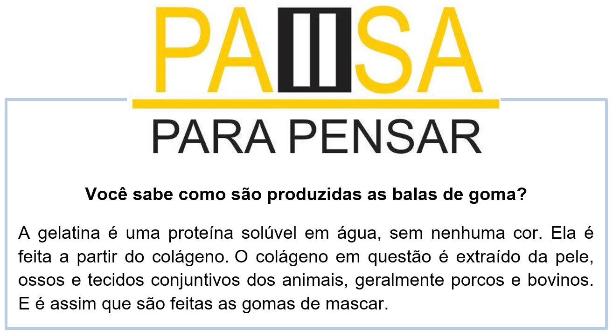

Capítulo 5: Industry Food – Indústria Alimentícia
What is the importance of food industry?
The role of the manufacturing food industry in relation to provision of foods for the weanling encompasses 4 main objectives viz. customer satisfaction, safety, providing product information and the maintenance of commercial viability.
Vamos começar com a pergunta do nosso texto: Qual a importância da indústria alimentícia? Você sabe? Nessa unidade você aprenderá curiosidades, vocabulários e outras coisas que envolver a parte alimentícia.
Analise nossa imagem, nela há muitas informações: supermarket (mercado), drive thru (comida expressa no carro), carry out (somente para levar) e eggs(ovos). Uma imagem que uma grande leitura. E o nosso texto? Descobriremos a importância desse setor, leia a tradução.
O papel da indústria alimentícia industrializada em relação ao fornecimento de alimentos para o desmame abrange quatro objetivos principais: satisfação do cliente, segurança, fornecimento de informações sobre produtos e manutenção da viabilidade comercial.

A indústria alimentícia gera outros assuntos, e um muito comum é a saúde, que é diretamente ligada a alimentação. Na imagem abaixo temos as palavras HEALTH (saúde) e FITNESS (adaptação/atividade física) e dicas de uma boa dieta.
Contextualizando - Pictionary de PACKAGES (embalagens)
Apple – maçã
Orange – laranja
Lemon – limão
Banana – banana
Tangerine – mexerica
Grapes – uvas
Pineapple – abacaxi
Pear – pêra
Apricots – damasco
Peaches – pêssego
Strawberries – morango
Raspberries – amora
Honeydew melon- melão
Avocado – abacate
Papaya – mamão
Mango – manga
Kiwi – kiwi
Watermelon – melancia
Figs – figo
Prunes – ameixa preta
Guava – goiaba
Cashew nut – caju
Coconut – coco
Vegetables = vegetais
Tomato – tomate
Potato – batata
Pepper – pimentão
Beans – vagem ou feijão
Peas – ervilha
Carrots – cenoura
Cabbage – couve ou repolho
Broccoli – brócolis
Cauliflower – couve-flor
Garlic - alho
Cucumbers – pepino
Corn – milho
Lettuce – alface
Onion – cebola
Drinks = bebidas
Water – água
Coffee – café
Tea – chá
Juice – suco
Milk – leite
Soda - refrigerante
Reconstruindo conhecimentos – uso do some e any
Some” and “any” são duas palavrinhas do inglês que estão sempre juntas e geram muitas dúvidas em nossa mente na hora de usá-las. Porém, podemos evitar tantas dúvidas com algumas dicas básicas.
Geralmente as dúvidas mais frequentes estão ligadas ao fato de usarmos as palavras “some” e “any” relacionadas com o conceito de contável e incontável em inglês. Os substantivos que são usados em referência a substâncias, líquidos ou massas e que não são comumente mensurados em unidades são chamados de incontáveis (uncountable nouns). Já aqueles que são facilmente contáveis, isto é, aqueles que podem ser mensurados em quantidades, são chamados de contáveis (countable nouns).
Usamos os substantivos incontáveis com a palavra “some”, uma vez que eles não possuem uma quantidade exata. Geralmente usamos “some” para preceder esses substantivos, como “some milk”, “some butter”, “some money”, “some water”.
A classificação que existe em inglês para contáveis e incontáveis é diferente da nossa em português. Por exemplo, aqui, no Brasil, vamos à padaria e pedimos: “Me dê dois pães, por favor!”. Nos países de língua inglesa, você não pode usar um número exato para fazer seu pedido de pão, você deve usar a palavra “some” para referir-se à quantidade de pão desejada.
>Por exemplo: I need some bread! (Eu preciso de alguns pães!). Entretanto, esse mesmo pão (bread), que é considerado incontável, pode ser contável se precedido por alguma medida. Podemos dizer, por exemplo: “I need 5 loaves of bread, please!" (Eu preciso de 5 bisnagas de pães, por favor!).
Aplicando ao nosso vocabulário
Outras medidas também são usadas para mensurar os elementos ditos como incontáveis, como garrafas (bottles), caixas (box/carton), pedaços (pieces), quilos (pound), fatias (slices), litros (liter). Dessa forma, podemos então dizer:
4 bottles of wine / 4 garrafas de vinho
1 box of cereal / 1 caixa de cereal
3 cartons of milk / 3 caixas de leite
1 piece of cake / 1 pedaço de bolo
2 pounds of cheese / 2 libras* de queijo
4 slices of pizza / 4 fatias de pizza
3 liter of water / 3 litros de água
O que aprendi
• Nesta unidade aprendemos o vocabulário do alimentício;
• Aprendemos sobre materiais usados nas embalagens;
• Vimos os tipos de alimentos;
• Aprendemos as nomenclaturas relacionadas aos alimentos;
• Na gramática, aplicamos as expressões some e any.
Praticando
Leia com atenção ao informativo, e explique a importância das vitaminas nas funções do nosso body (corpo)
Leia a propaganda e explique a diferença dos alimentos na nossa saúde.
O some e o any são palavras que usamos com palavras contáveis e incontáveis, conforme os estudos da nossa unidade. Aplicando ao nosso vocabulário analise as frases e escolha entre as expressões some ou any.
a. Some/any tomatões.
b. Some/any rice.
c. Some/any fast food.